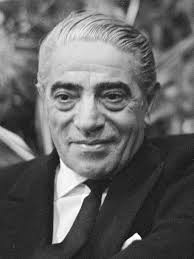

Synopsis. Aristotle Onassis was a Greek entrepreneur born on January 15, 1906, in Smyrna, a town in present-day Turkey. In the 1920s, Onassis launched his own cigarette brand. Shortly thereafter he realized that tobacco shipping generated more revenue, and went into the cargo ship.Onassis’s childhood was dominated by the principles of the Orthodox Church. Unsurprisingly, this upbringing influenced him throughout his life.
1.After the Turkey’s invasion of Greece and the subsequent Great Fire of Smyra.
2.It was during his time as a telephone engineer that he started eavesdropping on important business calls and used the information gained from the same to make his own deals.
3.It was while overhearing a conversation that the idea struck him to revive his father’s tobacco business.
4.In 1928, he made a trade agreement with Greece. During this time, he became involved in a lot of illegitimate activities, such as smuggling, bribing and so on. He even sabotaged his competitors and fraudulently used the name of established and famous cigarette companies.